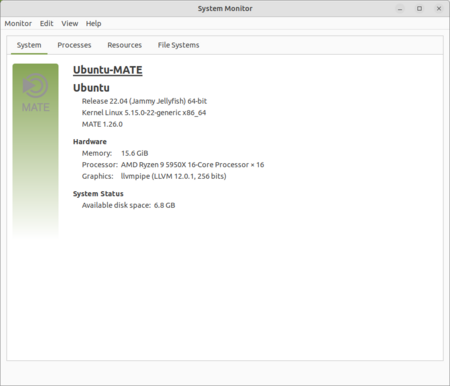

|  |
About Ubuntu MATE is a stable, easy-to-use operating system with a configurable desktop environment. Ideal for those who want the most out of their computers and prefer a traditional desktop metaphor. With modest hardware requirements it is suitable for modern workstations, single board computers and older hardware alike. For users coming from other operating systems, Ubuntu MATE can adapt the user interface with one-click to something more modern or something that you might be more familiar with via MATE Tweak |